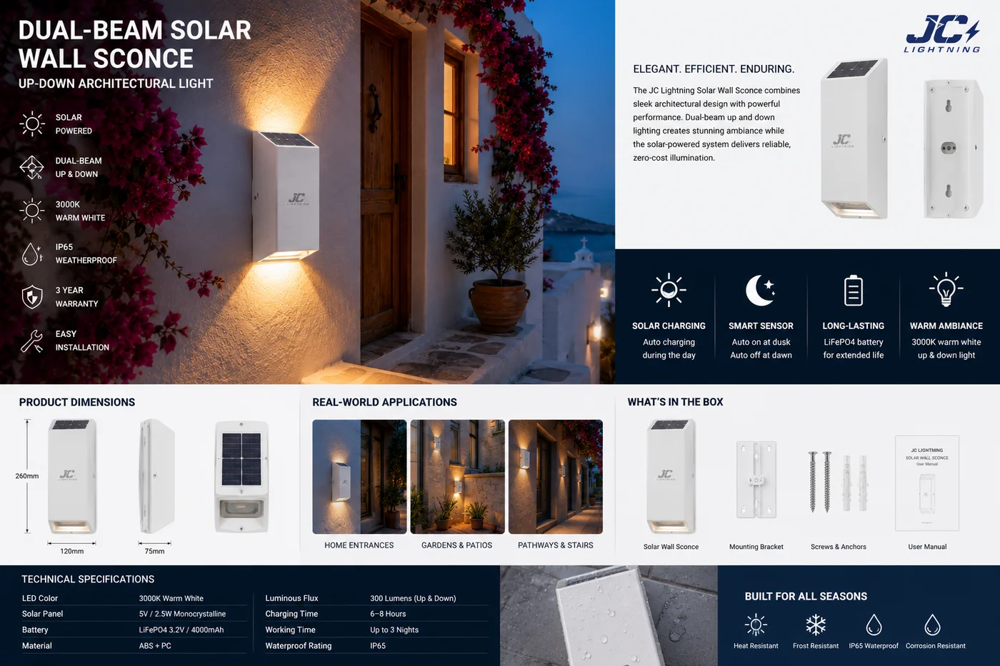

上下太阳能墙灯
现代双向壁灯,沿立面同时向上、向下投光——2×3W,IP65,铝制灯体与 3000K 暖光,黑、白、灰三色可选。

这一系列里别的产品讲究纯粹的安防输出,而这一款讲究建筑造型、兼带安防加成。上下双光束擦过墙面,在夜间为立面、门柱、别墅和精品酒店增添层次与轮廓。铝制灯体与三种饰面让它成为高端规格,而太阳能供电意味着无需在成品立面上拉线。
规格参数
| 功率 | 2×3W(上下双光束) |
|---|---|
| IP 防护等级 | IP65——防尘、防喷水 |
| 灯体 | 压铸铝 |
| 色温 | 3000K 暖白 |
| 续航时间 | 每次充电 10 小时 |
| 饰面 | 黑 / 白 / 灰 |
| 电池 | 磷酸铁锂(LiFePO4) |
| 认证 | CE + RoHS |
为什么选它
建筑感外观。上下投光呈现高端设计感——别墅、酒店和高档住宅立面的理想之选。
铝制耐用。压铸灯体抗腐蚀、抗紫外,户外可用数年。
三种饰面。黑、白、灰覆盖大多数建筑色调,同一 SKU 家族即可满足。
已认证、支持 OEM。每份报价附 CE + RoHS;可定制饰面与品牌。
为这些市场而建西班牙、澳大利亚、中东和拉美的别墅、酒店与高档住宅项目——随处可装的设计感立面照明。